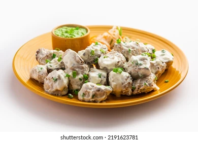
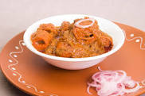

Malai chaap is a delicious dish made from tender pieces of boneless mutton marinated in a creamy yogurt-based sauce. The marinade typically includes spices such as garam masala, ginger, and garlic for added flavor. The meat is then grilled or cooked in a tandoor (clay oven) until tender and juicy. It is often served with a mint or cilantro chutney and naan bread. It's a popular dish in North India
Masala chaap is a flavorful dish made from tender pieces of boneless mutton that is marinated in a mixture of spices. The marinade typically includes spices such as turmeric, cumin, coriander, garam masala, ginger and garlic. The meat is then grilled or cooked in a tandoor (clay oven) until tender and juicy. It is often served with a mint or cilantro chutney and naan bread. It's a popular dish in North India and Pakistan.
Achari chaap is a dish made from tender pieces of boneless mutton marinated in a tangy pickling spice-based sauce. The marinade typically includes spices such as mustard seeds, fenugreek, and fennel. The meat is then grilled or cooked in a tandoor (clay oven) until tender and juicy. It is often served with a mint or cilantro chutney and naan bread. It's a popular dish in North India and Pakistan.